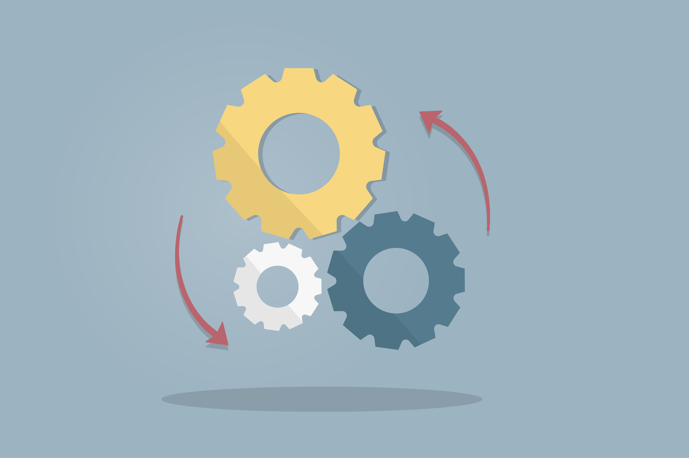

Algoritmos
Conjunto ordenado y finito de operaciones que permite hallar la solución
de un problema.
Un algoritmo es:
Puedes clickear cualquiera de las cartas para que te
enseñen mas informacion
counter_1

Finito
Estos tienen un inicio un fin si un algoritmo es infinito
provocaria
un error fatal en el computador o dispositvo
counter_2

Ordenado
Estos tienen un orden especifico al cual seguir, si alguno de
estos pasos
del algoritmo es cambiado generara un resultado diferente a lo que
normalmente se espera
counter_3

Preciso
Siempre tienen el mismo resultado no importa que y no me refiero a
numeros si no más como
si calientas el agua a altas temperaturas vas a provocar que el
agua hierva, si se sigue el orden de los pasos provocaras el
resultado que se quiere que de.
Estos tienen:
counter_1

Entrada
Para poder obtener un resultado lo que necesita primero es darle
un punto en el cual el algoritmo pueda empezar, por ejemplo a la
hora de
calcular una operación matemática hay que darle una cantidad
definida de numeros
counter_2

Proceso
Ya que se le dio el punto en el cual puede empezar ahora el
algoritmo conlleva
un proceso para dar un resultado, eso ya depende mucho del calculo
o proceso que se queria
llevar
counter_3

Salida
Como ultima parte del algoritmo el mismo no te va decir el
resultado por arte de magia,
este necesita un punto en el cual pueda darte el resultado, esto
simplemente puede ser una orden
dentro del codigo para poder enseñar el resultado en pantalla.
Ejemplo de un algoritmo
Hacer una taza de te:
| 1. Pon la bolsa de te en la taza |
| 2. Llena el hervidor de agua |
| 3. Hierve el agua |
| 4. Pon un poco de agua hervida en la taza |
| 5. Añade leche a la taza |
| 6. Añade azucar a la taza |
| 7. Mezcla todo con una cuchara |
| 8. Toma de la taza de te |